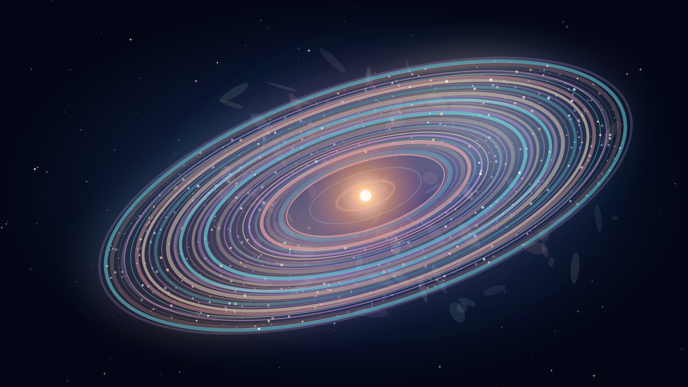
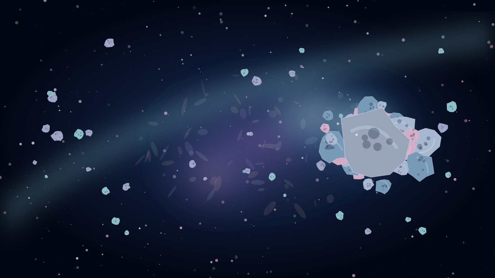
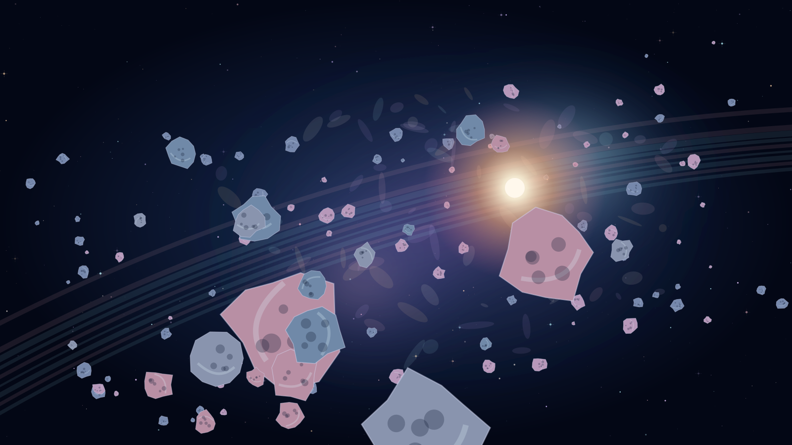
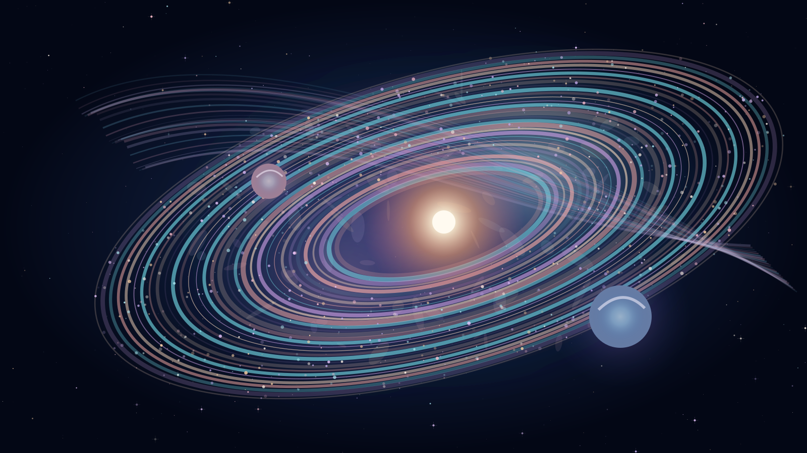

ROZDZIAŁ 36 · NARODZINY PLANET
Ziarno, które stanie się światem.
Nie ma jeszcze Ziemi, Saturna ani komet. Jest młoda gwiazda. Wokół niej wiruje dysk gazu, pyłu i lodu. Miliony drobin krążą, zderzają się i rozpraszają. Nieliczne rozpoczną historię, która kiedyś doprowadzi do powstania całych planet.

Jeszcze nie ma planet. Jest ich surowiec. Autorska wizja ATLAS SOLARIS. Kształt i barwy dysku nie są odwzorowaniem konkretnego obiektu.
TAM, GDZIE SKOŃCZYLIŚMY POPRZEDNIĄ OPOWIEŚĆ
Gwiazda już świeci. Jej otoczenie jeszcze się tworzy.
W etapie 35 zaglądaliśmy do obłoku, z którego rodzi się gwiazda. Część materii opadała ku środkowi, a część układała się w spłaszczony, wirujący dysk. Teraz opuszczamy samo serce protogwiazdy i kierujemy kamerę nieco dalej. Tam dzieje się coś równie niezwykłego: powstaje materiał na przyszłe planety.
Wokół młodej gwiazdy krążą gaz i drobiny stałej materii. O tym, jak szybko poruszają się po orbicie, decyduje przede wszystkim grawitacja gwiazdy. Blisko niej obrót jest szybszy, daleko — wolniejszy. Pył i gaz współdziałają, ale nie poruszają się identycznie. To właśnie te drobne różnice odgrywają wielką rolę w dalszej historii.
Wielkie, jasne pierścienie, które widzimy na artystycznych wizualizacjach, nie są gotowymi torami dla planet. Dysk jest rzeczywistym, dynamicznym środowiskiem. Materia przemieszcza się w nim, nagrzewa, chłodzi, zmienia skład, skleja się albo rozpada.
NAJMNIEJSZY POCZĄTEK NAJWIĘKSZEJ PODRÓŻY
Planeta może zacząć się od pyłku mniejszego niż włos.
Drobinom wielkości mikrometrów trudno wyobrazić sobie przyszłą Ziemię. A jednak to z takich ziaren — krzemianów, związków węgla, lodów i innych składników — zaczyna się wzrost większych ciał. Niewielkie zderzenia mogą prowadzić do przywierania. Powstają porowate agregaty, następnie grudki i otoczaki.
Nie jest to jednak idealny kosmiczny śniegowy bałwan, który rośnie po każdym spotkaniu. Zbyt szybkie zderzenia mogą rozbić większą grudkę. Inne prowadzą do odbicia, zamiast połączenia. Gaz wywiera opór, który potrafi zmieniać orbity ziaren. Tak rodzi się słynny problem: jak przejść od małych otoczaków do dużych planetozymali, zanim materiał zniszczą zderzenia albo ruch ku gwieździe?
Jednym z badanych rozwiązań jest koncentracja drobin w strugach i zagęszczeniach gazu, m.in. przez niestabilność strumieniową (ang. streaming instability). W odpowiednich warunkach skupiska ciał stałych mogą stać się wystarczająco gęste, aby własna grawitacja pomogła im zapadać się w planetozymale.

Milimetry, które mogą zmienić historię układu. Artystyczna ilustracja ziaren i agregatów, a nie model laboratoryjny zderzeń.
Nie musimy udawać, że znamy jeden uniwersalny sposób powstawania planet. Astronomowie nadal badają, które procesy dominują w różnych dyskach. Znamy fizykę wielu z nich, ale szczegółowa droga każdego obłoku do planet pozostaje jednym z najbardziej fascynujących problemów współczesnej astronomii.
NIE MA JEDNEGO MATERIAŁU NA WSZYSTKIE PLANETY
Bliżej gwiazdy dominuje skała. Dalej może przybyć lodu.
W wewnętrznych rejonach dysku jest stosunkowo gorąco. Woda łatwiej utrzymuje się w postaci pary, a część innych substancji też nie może tworzyć stabilnych ziaren stałych. Dalej, w chłodniejszych miejscach, lód może osiadać na pyłowych drobinach, zwiększając zasób ciał stałych dostępnych do budowy większych obiektów.
O umownej granicy lodu wodnego często mówi się w temperaturze rzędu 170 K. W rzeczywistym dysku nie jest to cienka, nieruchoma kreska. Położenie zależy od ciśnienia, składu, jasności gwiazdy, akrecji i historii termicznej dysku; dla różnych substancji istnieją różne granice kondensacji.
To jedna z przyczyn, dla których miejsce narodzin ciała ma znaczenie dla jego budowy. Nie oznacza jednak, że wszystkie planety skaliste powstają wyłącznie po jednej stronie granicy, a olbrzymy wyłącznie po drugiej. Materia migruje, a orbity rozwijają się razem z całym układem.
To przekrój poglądowy. Dokładne warunki i położenie granicy lodu zależą od parametrów dysku.
GRAWITACJA ZACZYNA PISAĆ NOWĄ HISTORIĘ
Wśród milionów ziaren pojawiają się pierwsze kosmiczne skały.
Planetozymaal — częściej w języku astronomii nazywany planetozymalem — to stosunkowo duży, grawitacyjnie związany budulec planet. Mówimy o ciałach od rozmiarów kilometrowych wzwyż, choć dolna granica zależy od używanej definicji i modelu. Takie obiekty przestają zachowywać się jak zwykłe unoszone przez gaz drobiny.
Ich wzrost nie musi już polegać wyłącznie na łagodnym sklejaniu ziaren. Istotne stają się przyciąganie, zderzenia, grawitacyjne ogniskowanie i akrecja mniejszych ciał. Powstają embriony planetarne — coraz większe zalążki przyszłych planet.
W kosmicznej skali to dramatyczny moment. Obiekt wystarczająco duży zaczyna oddziaływać z otoczeniem nie jak pojedynczy pyłek, ale jak mały, samodzielny świat. Przyciąga sąsiadów, rozprasza ich lub zmienia ich orbity.

Jeszcze nie planety. Już coś więcej niż pył. Ilustracja artystyczna, z nieporównywalnymi skalami rozmiarów przedstawionymi dla czytelności.
TO NIE JEST SPOKOJNA KARUZELA
Rosnące światy zaczynają zmieniać własny dysk.
W miarę wzrostu embrionów ich grawitacja może wpływać na materię gazową i pył. W niektórych warunkach w dysku tworzą się zagęszczenia, pierścienie, przerwy i struktury spiralne. Równocześnie rosnące obiekty mogą zmieniać swoje orbity, ponieważ dysk również na nie oddziałuje.
Duży skalisty rdzeń powstały wystarczająco wcześnie może — jeśli w dysku zostało dużo gazu — rozpocząć intensywną akrecję atmosfery. To jedna z dróg do powstawania gazowych olbrzymów. Inne obiekty pozostają mniejsze i budują planety skaliste. Zależy to od dostępnej materii, czasu, położenia i całego przebiegu ewolucji dysku.
Niektóre rozświetlone pierścienie wyglądają w fotografii jak ślady opon pozostawione w kosmicznym pyle. Ale nie każda przerwa oznacza planetę. Struktury mogą powstawać również wskutek zmian ciśnienia, procesów magnetycznych czy kondensacji substancji. Aby potwierdzić planetę, potrzebujemy dodatkowych obserwacji.

Planety zmieniają miejsce, w którym powstają. Scena artystyczna. Przerwy i spirale przedstawiono poglądowo — nie są wynikiem symulacji hydrodynamicznej.
NIE TYLKO WIZJA ARTYSTY
Nagle w prawdziwych danych pojawiły się pierścienie.
W listopadzie 2014 roku astronomowie zaprezentowali niezwykle szczegółowy obraz dysku wokół młodej gwiazdy HL Tauri, odległej o około 450 lat świetlnych. Zespół radioteleskopów ALMA zarejestrował rozkład promieniowania milimetrowego emitowanego przez pył. Obraz ujawnił regularne jasne pierścienie rozdzielone ciemniejszymi szczelinami.
To nie fotografia wykonana aparatem optycznym. Barwy przedstawiają intensywność obserwowanej emisji, przetworzoną w czytelną mapę. To prawdziwy pomiar, ale nie naturalny kolor dysku. Właśnie dzięki takim obserwacjom wiemy, że młode układy mogą mieć dużo bardziej złożoną strukturę, niż dawniej sądziliśmy.

HL Tauri — obraz pyłu w paśmie milimetrowym, 2014. Źródło: ALMA (ESO/NAOJ/NRAO). To przetworzone dane pomiarowe, nie zdjęcie w świetle widzialnym. Oryginalny obraz i informacje ESO ↗
Jeszcze bardziej bezpośrednie świadectwo odnajdujemy w układzie PDS 70: astronomowie zaobserwowali tam młode planety w szerokiej przerwie dysku. Obserwacje sugerują, że przynajmniej część z nich nadal akreuje materię. To wyjątkowa okazja, by badać planetę nie jako gotową kulę, ale jako obiekt w trakcie narodzin.
Zobacz doniesienie ESO o dysku wokół PDS 70 cNARODZINY NIE WYZNACZAJĄ OSTATECZNEGO MIEJSCA
Planeta może powstać w jednym miejscu, a zamieszkać w innym.
Kiedy w dysku pojawiają się rosnące planety, zaczyna się nowy rozdział. Ciała działają na siebie grawitacyjnie, wymieniają moment pędu z gazem i mogą migrować. Niekiedy trafiają w rezonanse orbitalne. Inne zderzają się, rosną albo zostają rozproszone na odległe orbity.
Wiele z tych procesów pomaga wyjaśniać, dlaczego odkrywane układy egzoplanetarne są tak różnorodne. Znajdujemy olbrzymy blisko gwiazd, zwarte rodziny małych planet i obiekty na bardzo wydłużonych orbitach. Samo zrozumienie miejsca narodzin nie wystarczy. Trzeba poznać także dalszą dynamikę.
Dlatego w laboratorium zobaczysz nie jeden sztywny model, lecz trzy spojrzenia: na obracający się dysk, na zmienną granicę lodu i na drogę od ziaren do zalążków światów.
WYBIERZ PARAMETRY. ZOBACZ KONSEKWENCJE.
Zbuduj młody układ planetarny.
W pierwszym trybie wykorzystaj prawa Keplera i promień Hilla. W drugim znajdź przybliżoną granicę lodu. W trzecim zobacz widowiskowy, świadomie uproszczony obraz wzrostu od ziaren do planetozymali.
Małe grudki zderzają się, część rośnie, część się rozpada.
Tryb 1. Dla planet o masie znacznie mniejszej od masy gwiazdy stosujemy III prawo Keplera w jednostkach słonecznych: P [lat] ≈ √(a³ / M★). Promień Hilla obliczamy jako RH = a · (mp / (3M★))1/3, przyjmując 332 946 mas Ziemi na masę Słońca. Tryb 2. Temperatura modelowa T = 278 K · (L/L☉)1/4 / √(r/AU). Granica lodu dla T = 170 K: r ≈ (278/170)² √(L/L☉) AU. Tryb 3. Ilustracje wzrostu nie stanowią modelu numerycznego. Kolory, rozmiary obiektów, przerwy i spirale w wizualizacji są artystyczne, nie odpowiadają konkretnym obserwacjom. Animacja ogranicza obciążenie urządzenia i respektuje preferencję zmniejszonego ruchu.
W KAŻDYM UKŁADZIE INNA HISTORIA
Pewnego dnia pył znika z obrazu. Pozostają światy.
Gaz dysku stopniowo rozprasza się pod wpływem akrecji, promieniowania gwiazdy i innych procesów. Część drobin staje się materiałem większych ciał, część ginie w zderzeniach, a część opuszcza obszar. Powstające planety nie muszą przypominać planet naszego Układu Słonecznego.
To właśnie sprawia, że poszukiwanie egzoplanet jest tak fascynujące. Oglądamy niezwykłą różnorodność końcowych rezultatów procesów, które przez lata toczyły się w ciemnym dysku. Od pojedynczego ziarenka lodu po układ wielu światów — wszystko opiera się na fizyce, którą potrafimy badać, choć nie rozumiemy jeszcze każdego szczegółu.
Zanim na jakiejkolwiek planecie pojawi się niebo, najpierw musi powstać sama planeta. A wcześniej — ziarno.
Rozdział powstał w oparciu o materiały NASA, ESO/ALMA oraz Instytutu Maxa Plancka. Obrazy I–IV są autorskimi wizjami artystycznymi ATLAS SOLARIS. Zdjęcie HL Tauri przedstawia prawdziwą obserwację interferometryczną ALMA.